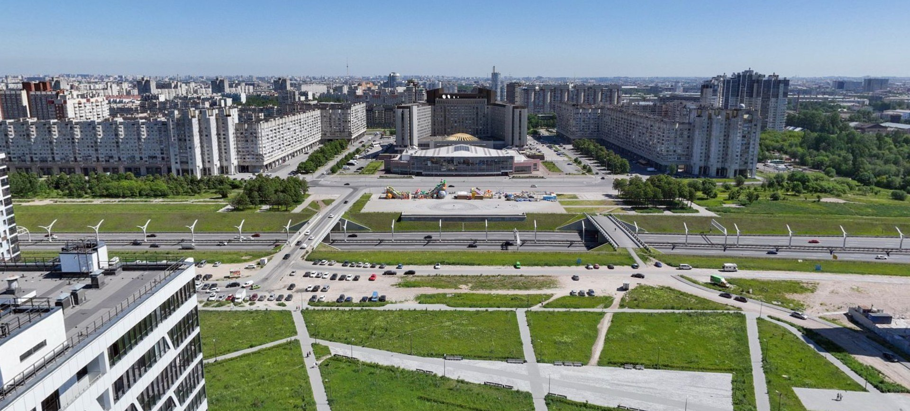
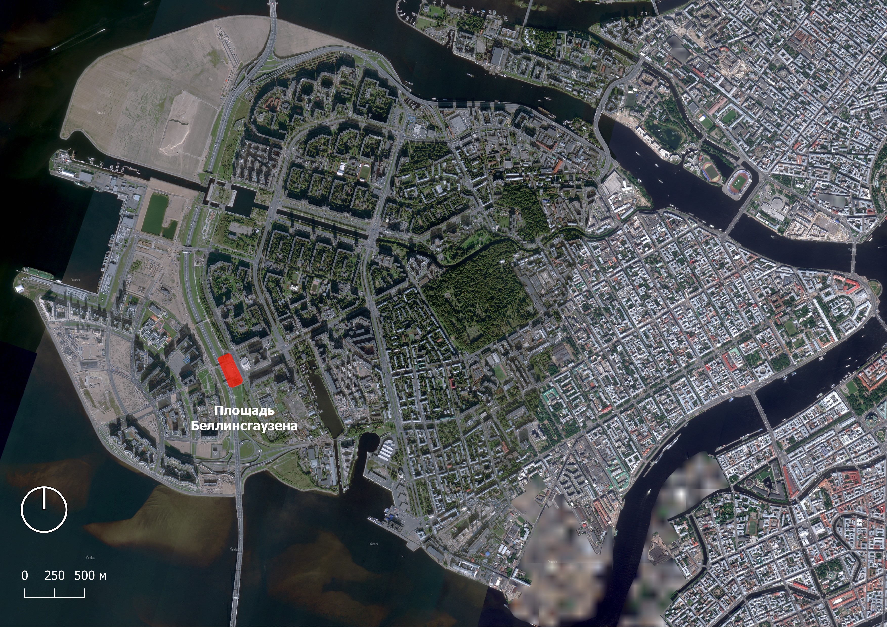
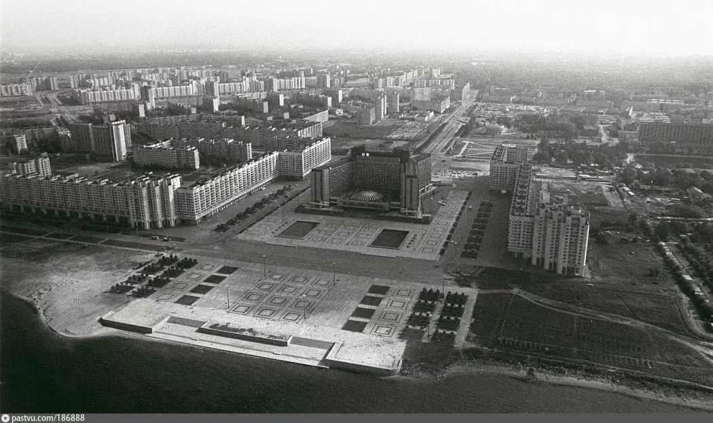
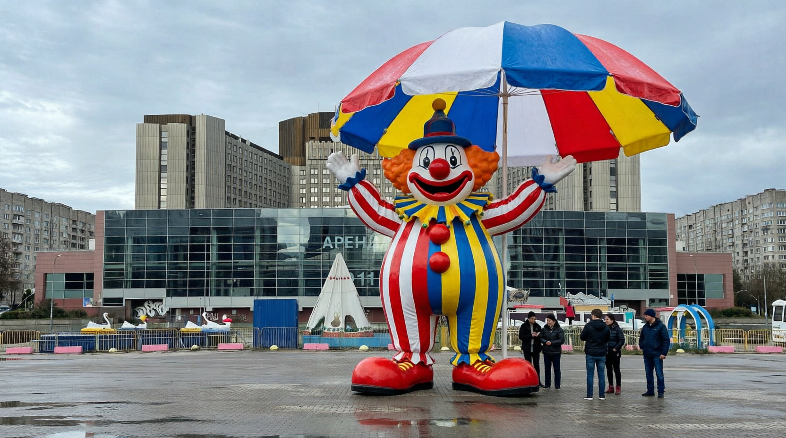
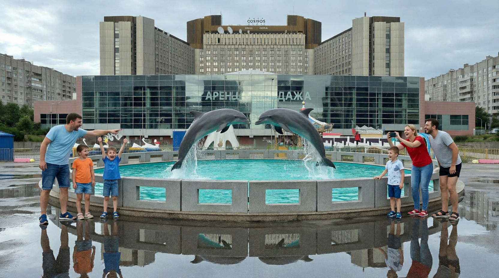

Bellinsgauzen Square was planned as a ceremonial sea-front plaza. Today it is a wide, windswept passage between old Vasilyevsky Island and the new reclaimed quarters. Before a hotel is built and the Linear Park is extended, we propose a season of small temporary pavilions that test what the square actually needs. Read the evidence, judge the argument, and tell us where we are wrong.
Team: Kuligin Evgenij — Site researcher · Kaukov Timofei — Design strategist · Feoktistov Victor — Community researcher & Public engagement lead

The square lies on the edge of the old Soviet ensemble around the Kosmos hotel (formerly Pribaltiyskaya). To the west, the Western High-Speed Diameter (ZSD) separates it from the new reclaimed quarters.


Some will say the open plateau is a valuable reserve of space, rare in a dense district, and that it works well enough for walking. Others will see wasted land that could host housing, shops or services. Our own view is that the problem is not a lack of land. The space gives people no reason, and no shelter, to stay, and nobody yet knows which interventions would change that.
The former “Waterville” aquapark building on the square (Korablestroiteley St. 14, building B) is planned for demolition and replacement by a hotel complex, with the Linear Park to be extended. In 2021 the press reported that a company linked to the PIK group had bought the building and intended to replace it with a hotel of up to 13 floors, possibly in an apart-hotel format (AB News, 26 March 2021). We have not confirmed the current status of the project, so this must be checked before the site is presented as “decided”.
What the plan does not say is what the rest of the square will be for in the meantime, or afterwards. That is the question we examine.
Our field study was small. Treat the numbers as a first impression, not as proof.
Two 20-minute counts at the same spot.
Evening group: 13 men, 15 women, 1 child, 3 aged 65+, 2 prams, 3 on scooters or bikes. Only one child was seen in the evening count, and one in the morning. The evening count was in rain, so the flow may be higher or lower on a dry day.
Good: traffic safety (+2), walking (+2), scale (+2). Poor: sensory discomfort (−2), talking (−2), standing (−1).
Specialists aged about 25–35 who walk through on the way to stops. One described the square as a “grey pipe”. They would gain most from shelter and a pleasant route, and lose most from a longer detour.
One interviewee (65+) said nothing bothers them, that it is wide and good, and that nothing should be changed. We cannot say how widely this is shared; they may value the open space and fear change.
Tyre fitting, seasonal fireworks, attractions and kiosks. We have not spoken to them. Any plan affects their income and must offer a fair alternative.
“Nothing bothers me, it is wide, it is fine… don’t change anything.”Interview, resident aged 65+ (paraphrased from our field notes)
Instead of guessing, we propose a temporary programme of small installations on the square, inspired by the Concéntrico festival of architecture and design in Logroño, Spain, where installations are placed in the city’s existing squares. Ours would be much smaller. Each object is a question, and the answers shape the permanent design.
| Option | Could gain | Could lose | Depends on |
|---|---|---|---|
| A. Keep as is | No cost, no disruption. | Wind, puddles and emptiness remain; the square stays a passage. | Nothing changes unless someone acts. |
| B. Demolish and build hotel complex, Linear Park extended | A new use for a derelict building; more green space; investment. | The open space around it, and any chance to learn what residents want first. | Permits, developer’s plans, design of the public space around the hotel. |
| C. Pavilion pilot (recommended) temporary installations, then decide | Real evidence of what people use; shelter and life on the square now; a better brief for B. | Some of the plateau’s open space during the pilot; needs a small budget and permission. | Landowner and city consent, maintenance, safety, and a clear end date. |
C does not exclude B. It could run before construction begins and shape how the public space around the new building is designed.
| Type of object (idea) | Question it tests | How we would measure it |
|---|---|---|
| Attractor pavilions: something to see, do or eat | Will a reason to stop make people stay? | Number of people stopping and how long, compared with the 10 October counts. |
| Wind shelters | Does protection from wind make the plateau usable? | Use of seating and standing areas on windy and calm days; short interviews. |
| Rain cover | Do people use the square when it rains, as the evening count suggests they pass through then? | Counts in dry and wet weather at the same time of day. |
| Places to meet: seating, tables, informal stage | Is there demand for social activity, which is almost absent today? | Repeat the Gehl assessment and count groups of two or more. |


The pilot may well show what the square needs, provided that the objects are visible from the main crossing lines and there is a way to count and ask people. It is unlikely to change habits for the residents of the reclaimed quarters unless it stays long enough to become familiar, ideally a full season. Temporary pavilions can also be vandalised or ignored, and need someone responsible for them. We would change our recommendation if the landowner will not allow the pilot, or if the building works make the plateau unusable.
We want to hear from people who use the square, and especially from those who disagree.
Which future would you choose?
This poll runs only in your browser and is not shared, so it is not evidence. Real results come from our on-site survey below.
Short interviews at the bridges and bus stops at morning, evening and weekend times, to reach people who cross but never stop. Repeat our counts at the same times.
Meet the owners of the kiosks, tyre service and attractions before any design is fixed.
Put the first pavilion or a full-size mock-up on the plateau with a comment board, and report back what we changed and why.